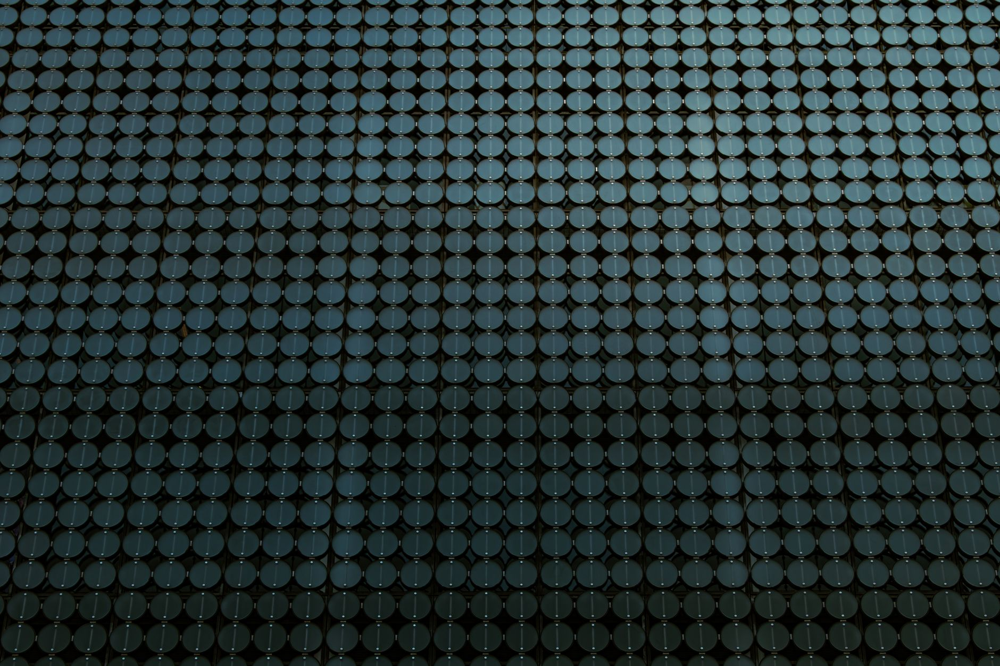

소부장 1700억 6개 분야, 진짜 수혜는 어디인가

산업통상자원부는 2026년 8월 소부장(소재·부품·장비) 첨단전략산업 투자지원 접수를 연장하며 지원 규모를 기존 1200억 원에서 1700억 원으로 확대했다. 지원 대상은 반도체·디스플레이·이차전지·첨단모빌리티·바이오·로봇 등 6개 분야로, 중소·중견기업 투자액의 최대 50%를 현금 또는 현물로 지원한다.
이번 확대의 배경에는 2019년 일본 수출규제 이후 7년간 누적 투입된 약 4조 원의 소부장 정책 자금이 국산화 단계를 넘어 글로벌 스펙인(spec-in) 단계로 전환해야 한다는 정책 판단이 있다. 산업부는 국내 소부장 기업의 해외 팹·완성차 공급망 진입을 2027년까지 50건 이상 지원하겠다는 목표를 병행 제시했다.
6개 분야 가운데 예산 집중도는 반도체 소재·장비가 전체의 약 40%로 최대이며, 차량용 반도체 소재(파워 반도체 기판·패키징)와 이차전지 전해질·분리막이 그 뒤를 잇는다. 호남 반도체 클러스터를 겨냥한 차량용 소재 분야는 지방 이전 기업에 추가 10%p 가산 지원이 적용된다.
실제 접수 연장은 당초 마감일 기준 신청 건수가 목표치의 60% 수준에 그쳤기 때문이다. 업계에서는 '투자액 확정 후 지원 신청' 구조가 중소기업의 선투자 부담을 높인다는 지적이 지속돼왔다. 이번 연장과 함께 산업부는 분할 납입 방식 허용 여부를 검토 중이다.
소부장 정책이 국산화(import substitution)에서 글로벌 공급망 진입(export qualification)으로 목표를 격상했다는 점이 이번 확대의 핵심이다. 단순히 1700억 원 규모보다, '해외 팹 스펙인 50건'이라는 아웃풋 목표가 처음 명시됐다는 사실이 더 중요하다. 이는 한국 소부장 기업이 TSMC·인텔 파운드리·글로벌파운드리 같은 해외 고객의 공인 공급자 리스트에 이름을 올려야 한다는 압박으로 직결된다.
공급망 전문가 시각에서 보면 1700억 원의 실효성은 '어느 기업이 받느냐'보다 '어느 팹이 스펙인을 허가하느냐'에 달려 있다. 현장에서 스펙인 프로세스는 통상 12~24개월, 비용 5억~30억 원이 소요된다. 정부 지원금이 이 비용의 절반을 커버한다 해도 레퍼런스 고객 없이 해외 팹 문을 두드리기는 여전히 어렵다. 핵심은 국내 삼성전자·SK하이닉스가 공동 스펙인 레퍼런스를 제공하는 '국내 앵커 팹 연계 구조'가 동시에 작동하는지 여부다.
파워 반도체 기판(SiC·GaN 에피 웨이퍼) 분야 국내 중소 소재사들이 1차 수혜권에 든다. 예하퓨처(SiC 에피), 에스앤에스텍(블랭크 마스크) 등이 반복 신청 이력이 있으며, 이번 지원 확대로 설비 투자 일정을 6개월 이상 앞당길 수 있다. SiC 기판 글로벌 시장은 2030년 32억 달러(약 4조 3000억 원) 규모로, 국내 기업의 점유율은 현재 3% 미만에서 정책 지원 시 10% 수준까지 목표가 제시됐다.
이차전지 분리막·전해질 분야 중견기업(더블유씨피·솔브레인)도 수혜 범위 안에 있다. 특히 전해질 첨가제 분야는 중국산 의존도가 60%를 넘는 품목으로, 1700억 원 중 이차전지 분야 배정액(약 340억 원 추정)이 집중될 경우 국내 생산 비중을 2027년까지 40%대로 끌어올릴 기반이 생긴다.
지원 구조상 '선투자 후보전' 방식이 유지되는 한, 순자산 50억 원 미만 소기업은 실질적으로 접근하기 어렵다. 1700억 원 중 실제 소기업 집행액이 20% 이하에 그칠 경우 정책 취지와 현장 배분 사이의 괴리가 다시 부각될 것이다. 2023~2025년 집행 데이터에서도 지원액의 68%가 중견기업 이상에 집중됐다.
해외 소재 공급사들은 한국 고객의 국산 대체 압력이 강해질수록 단가 협상력이 약해진다. 특히 일본 소재 기업들은 포토레지스트·CMP 슬러리·에칭가스 분야에서 한국 내 점유율이 2019년 85%에서 2025년 62% 수준으로 이미 하락 중이다. 이번 지원 확대는 이 흐름을 추가 가속할 것이다.
투자자 관점에서 이번 정책의 수혜 종목 선별 기준은 단순하다: ① 이미 국내 팹 스펙인이 완료된 품목을 보유하고 있으며, ② 해외 팹 확장 계획이 IR 자료에 명시된 기업. 스펙인 이력 없이 신규 진입을 시도하는 기업은 정부 지원을 받더라도 상업화까지 3년 이상 걸린다.
구매담당자 입장에서는 정부 지원을 받아 설비를 확장한 국내 소재사의 납기·품질 안정성을 별도 검증해야 한다. 지원금이 설비 투자로 이어지는 시점과 양산 안정화 시점 사이에 통상 18개월 공백이 있다. 이 공백 기간 동안 이중 소싱(국내+해외) 유지 비용을 선반영해 두어야 한다.
산업 전략가라면 '6개 분야 균등 배분'이 아니라 '3개 이하 분야 집중'을 압박해야 할 시점이다. 일본이 2010년대 후반 소부장 정책에서 분산 지원을 선택했다가 글로벌 스펙인 성과가 미미했던 전례가 있다. 한국은 반도체 소재와 차량용 소재 두 축에 예산을 집중하는 방향으로 2027년 이전에 재조정이 필요하다.
실제 조달 현장에서는 — 정부 지원 여부와 무관하게 해외 팹의 소재 승인 절차(AVL 등록)는 자체 일정으로 움직인다. 지원금이 집행되는 2026년 말~2027년 초 시점에 AVL 등록 심사를 동시에 진행하지 않으면 설비는 늘었는데 수주가 없는 상황이 반복된다. 국내 소재사 구매 담당자들은 정부 지원 신청과 해외 고객사 AVL 신청을 반드시 병행 추진해야 한다.
이 포스팅은 쿠팡 파트너스 활동의 일환으로 수수료를 제공받습니다.